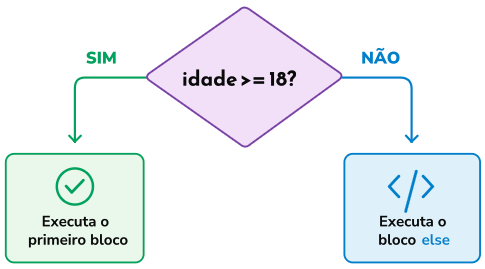
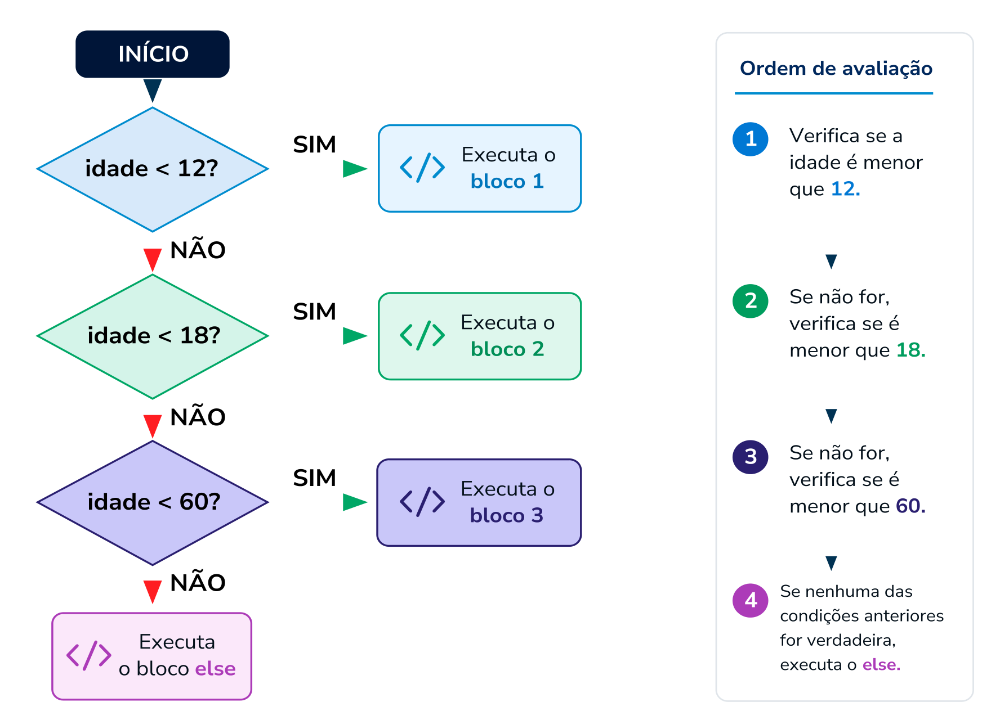

Módulo 2 | Aula 1
Introdução ao Python para Análise de Dados em Saúde
Tomando decisões e automatizando tarefas
Um programa torna-se realmente útil quando consegue responder perguntas como: A pessoa possui 60 anos ou mais? O registro pertence ao sexo feminino?
Responder a essas perguntas exige que o computador seja capaz de tomar decisões e repetir procedimentos. Vamos conhecer as estruturas condicionais, utilizadas para tomar decisões, e os laços de repetição, utilizados para automatizar tarefas?
Comparando informações
Antes de tomar qualquer decisão, o computador precisa comparar valores utilizando operadores de comparação. Veja quais são os principais operadores no quadro a seguir:
| Operador | Significado | Exemplo |
|---|---|---|
| == | Igual a | idade == 60 |
| != | Diferente de | sexo != "F" |
| > | Maior que | idade > 60 |
| < | Menor que | idade < 18 |
| >= | Maior ou igual a | idade >= 60 |
| <= | Menor ou igual a | idade <= 5 |
idade = 72
print(idade >= 60)Resultado:
TrueEssas comparações produzem apenas dois resultados possíveis: True (verdadeiro) ou False (falso).
Não confunda os operadores: = (igual) é utilizado para atribuir um valor a uma variável, enquanto == (igual igual) é utilizado para comparar dois valores. Essa é uma das diferenças que mais geram dúvidas entre pessoas que estão aprendendo programação.
Utilizando if
O objetivo da estrutura if é permitir que determinadas instruções sejam executadas somente quando uma condição for verdadeira. Observe um exemplo simples:
idade = 20
if idade >= 18:
print("Pessoa maior de idade.")Nesse caso, o Python verifica se idade >= 18 é verdadeira. Como 20 é maior ou igual a 18, a mensagem é exibida. Se a condição for falsa, o bloco de instruções associado ao if simplesmente não será executado:
idade = 15
if idade >= 18:
print("Pessoa maior de idade.")Nesse exemplo, nenhuma mensagem será exibida.
O recuo das linhas (indentação) é obrigatório em Python. Ele indica quais instruções pertencem ao if.
Utilizando else
Muitas vezes, precisamos definir o que deve acontecer quando a condição for verdadeira e o que deve acontecer quando ela for falsa. Para isso, utilizamos else.
idade = 15
if idade >= 18:
print("Pessoa maior de idade.")
else:
print("Pessoa menor de idade.")Nesse caso, existem dois caminhos possíveis:

Utilizando elif
Em algumas situações, existem mais de duas possibilidades. Nesse caso, podemos utilizar elif, que significa, de forma simplificada, "caso contrário, se". Por exemplo, podemos classificar uma pessoa de acordo com sua idade:
idade = 20
if idade < 12:
print("Criança")
elif idade < 18:
print("Adolescente")
elif idade < 60:
print("Adulto")
else:
print("Pessoa idosa")O Python avalia as condições de cima para baixo. Assim que encontra uma condição verdadeira, executa o respectivo bloco e não continua avaliando as demais condições. De acordo com o exemplo acima, veja como funcionaria:

Essa estrutura é especialmente útil quando precisamos escolher uma entre várias possibilidades.
Combinando condições
Também é possível combinar diferentes comparações utilizando os operadores lógicos and (E), or (OU) e not (NÃO). Veja:
idade = 68
sexo = "F"
# and exige que todas as condições sejam verdadeiras
if idade >= 60 and sexo == "F":
print("Mulher idosa.")
# or exige que ao menos uma condição seja verdadeira
estado = "MG"
if estado == "MG" or estado == "SP":
print("Registro da Região Sudeste.")Automatizando tarefas repetitivas: for e while
Conforme mencionado anteriormente, bases de dados reais podem conter milhões de registros, executar manualmente a mesma tarefa para cada um seria inviável. Para isso utilizamos as estruturas de repetição (laços), que executam automaticamente uma sequência de instruções diversas vezes.
O laço for é utilizado principalmente para percorrer os elementos de uma coleção ou uma sequência de valores, executando um conjunto de instruções para cada elemento:
nomes = ["Ana", "Carlos", "Maria"]
for nome in nomes:
print(f"Analisando {nome}")Resultado:
Analisando Ana
Analisando Carlos
Analisando MariaEssa capacidade de percorrer elementos e executar a mesma operação para cada um deles torna o for especialmente útil em tarefas de análise e processamento de dados.
Combinando o for com o que você viu anteriormente, podemos pensar na tarefa de identificar as pessoas de um cadastro que sejam idosas. A avaliação partirá de uma lista com as idades das pessoas cadastradas.
idades = [58, 64, 12]
for idade in idades:
if idade>=60:
print(f"* Idoso com {idade} anos")
else:
print(f"- Não é idoso e tem {idade} anos")Resultado:
- Não é idoso e tem 58 anos
* Idoso com 64 anos
- Não é idoso e tem 12 anosJá o laço while é utilizado quando a repetição depende de uma condição. Ele continua executando enquanto essa condição permanecer verdadeira:
contador = 1
while contador <= 5:
print(contador)
contador = contador + 1Sempre verifique se existe alguma instrução que modifica a condição do while. Caso contrário, o programa poderá entrar em um laço infinito, executando indefinidamente.
De modo geral, utilize for quando quiser percorrer os elementos de uma coleção ou quando o número de repetições for conhecido. Utilize while quando o número de repetições depender de uma condição.
É evidente que esses exemplos estão longe de esgotar o tema. Felizmente, graças à comunidade Python, há muito conteúdo disponível gratuitamente nos mais diversos formatos. Aproveite!